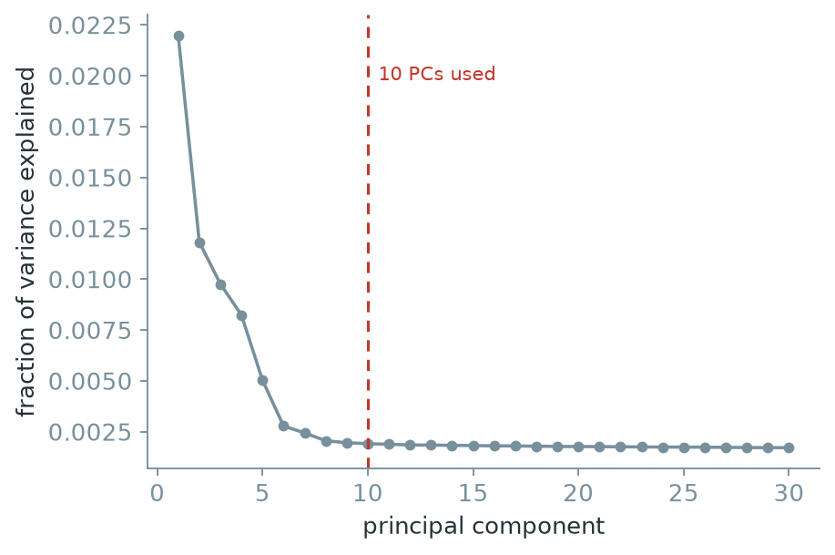
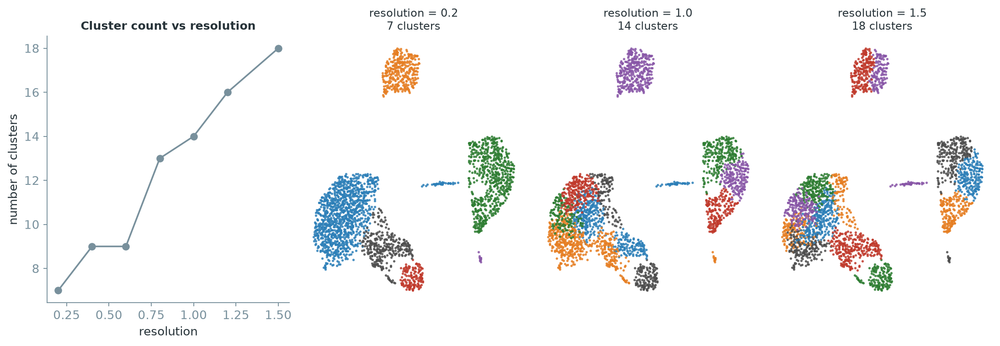
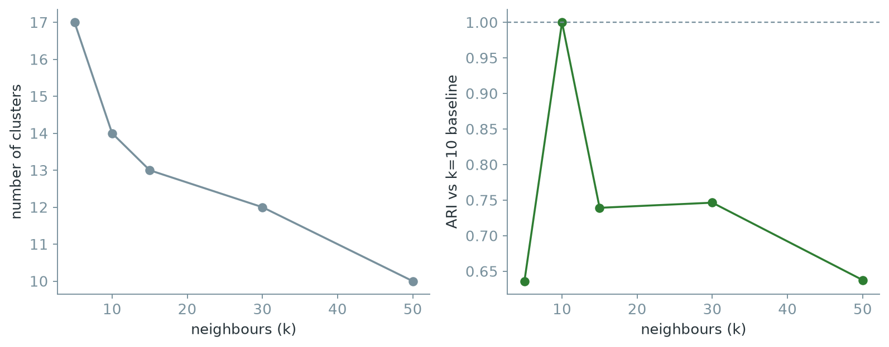

4 Leiden exercises with PBMC3k
4.1 The dataset
These exercises use PBMC3k, a collection of 2,700 peripheral blood mononuclear cells from a healthy donor, produced with the 10x Genomics platform. The dataset is widely used in introductory single cell clustering tutorials.
Unlike Chapter 2’s simulated data, there is no known true label for each cell. What counts as the right number of clusters, or the right resolution, is not something this chapter can simply tell you. The exercises walk through a complete, small analysis, from raw counts to a Leiden clustering, and ask you to defend the choices made along the way rather than to reproduce one fixed answer.
Keep the three files together inside a folder named pbmc3k_raw, itself inside a folder named data. Seurat::Read10X() and scanpy.read_10x_mtx() each read this three file layout directly.
4.2 Exercise 1. Load the data and run basic quality control
Task. Load the raw count matrix. Report its shape. Compute, for every cell, the number of detected genes, the total UMI count, and the percentage of counts coming from mitochondrial genes, identified by a MT- prefix. Filter out cells with fewer than 200 detected genes, more than 2,500 detected genes, or more than 5 percent mitochondrial content. Also remove genes detected in fewer than 3 cells. Report the shape after filtering.
An unusually high mitochondrial percentage is a standard sign of a damaged or dying cell, and an unusually high gene count can indicate two cells captured in one droplet. Neither cutoff is a law of nature; different tissues and protocols call for different thresholds. These values follow the dataset’s own well-established tutorial convention, so that your result can be checked against a widely used reference analysis.
library(Seurat)
counts <- Read10X(data.dir = "data/pbmc3k_raw")
dim(counts)
pbmc <- CreateSeuratObject(counts = counts, project = "pbmc3k",
min.cells = 3, min.features = 200)
pbmc[["percent.mt"]] <- PercentageFeatureSet(pbmc, pattern = "^MT-")
summary(pbmc$percent.mt)
pbmc <- subset(pbmc, subset = nFeature_RNA < 2500 & percent.mt < 5)
dim(pbmc)[1] 32738 2700
Min. 1st Qu. Median Mean 3rd Qu. Max.
0.000 1.537 2.031 2.217 2.643 22.569
[1] 13714 2638import scanpy as sc
adata = sc.read_10x_mtx("data/pbmc3k_raw", var_names="gene_symbols")
adata.var_names_make_unique()
print(adata.shape)
sc.pp.filter_cells(adata, min_genes=200)
sc.pp.filter_genes(adata, min_cells=3)
adata.var["mt"] = adata.var_names.str.startswith("MT-")
sc.pp.calculate_qc_metrics(adata, qc_vars=["mt"], percent_top=None,
log1p=False, inplace=True)
adata = adata[adata.obs.pct_counts_mt < 5, :].copy()
adata = adata[adata.obs.n_genes_by_counts < 2500, :].copy()
print(adata.shape)(2700, 32738)
(2638, 13714)The raw matrix contains 2,700 cells and 32,738 genes. After filtering, 2,638 cells and 13,714 genes remain. The removed cells failed at least one quality threshold, while the removed genes were detected in fewer than three cells. Read the dimension order carefully. dim() reports genes before cells, while .shape reports cells before genes.
4.3 Exercise 2. Normalize, select variable genes, and run PCA
Task. Normalize each cell’s counts to a common total, log-transform, and select a set of highly variable genes. Scale the data and run PCA on the variable genes. Plot the fraction of variance explained by the first 30 components and decide how many components to carry forward.
There is no universally correct number of principal components. Look for where the curve of variance explained flattens out, and prefer a number that comfortably includes the informative components without deliberately chasing noise in the tail. Ten is used for the rest of this chapter, but nearby choices, such as eight or fifteen, would be defensible too.
pbmc <- NormalizeData(pbmc, normalization.method = "LogNormalize", scale.factor = 10000)
pbmc <- FindVariableFeatures(pbmc, selection.method = "vst", nfeatures = 2000)
length(VariableFeatures(pbmc))
pbmc <- ScaleData(pbmc)
pbmc <- RunPCA(pbmc, features = VariableFeatures(pbmc), npcs = 15)
round((Stdev(pbmc, reduction = "pca")[1:10])^2 /
sum(pbmc@reductions$pca@stdev^2), 4)[1] 2000
[1] 0.3432 0.1376 0.1020 0.0957 0.0685 0.0441 0.0291 0.0258 0.0232 0.0229adata.layers["counts"] = adata.X.copy()
sc.pp.normalize_total(adata, target_sum=1e4)
sc.pp.log1p(adata)
sc.pp.highly_variable_genes(adata, min_mean=0.0125, max_mean=3, min_disp=0.5)
adata.var["highly_variable"].sum()
adata.raw = adata
adata = adata[:, adata.var.highly_variable].copy()
sc.pp.scale(adata, max_value=10)
sc.tl.pca(adata, svd_solver="arpack", random_state=0)
adata.uns["pca"]["variance_ratio"][:10].round(4)1838
array([0.022 , 0.0118, 0.0098, 0.0082, 0.005 , 0.0028, 0.0024, 0.0021,
0.002 , 0.0019])
Figure 4.1 drops most sharply over the first four or five components and changes much more slowly after about component ten. Carrying ten components forward retains the clear structure near the start of the curve without extending far into its flat tail. The choice is approximate, so a useful follow up would repeat the graph construction with nearby cutoffs and check whether the main conclusions persist.
4.4 Exercise 3. Build the neighbour graph and run Leiden
Task. Using the first 10 principal components, build a neighbour graph with 10 neighbours per cell and run Leiden at resolution 1.0. Report the number of clusters found and the size of each cluster.
Answer this before running any code: what object does Leiden actually receive here? It is not the raw count matrix, and it is not a UMAP coordinate. Confirm your answer once you have written the code.
pbmc <- FindNeighbors(pbmc, dims = 1:10, k.param = 10)
pbmc <- FindClusters(pbmc, algorithm = 4, resolution = 1.0,
cluster.name = "leiden_1.0")
length(unique(pbmc$leiden_1.0))
table(pbmc$leiden_1.0)[1] 14
1 2 3 4 5 6 7 8 9 10 11 12 13 14
368 344 331 264 253 225 192 163 155 147 117 33 32 14sc.pp.neighbors(adata, n_neighbors=10, n_pcs=10, random_state=0)
sc.tl.leiden(adata, resolution=1.0, key_added="leiden_1.0", random_state=0,
flavor="igraph", n_iterations=2, directed=False)
adata.obs["leiden_1.0"].nunique()
adata.obs["leiden_1.0"].value_counts()14
leiden_1.0
1 360
3 344
0 289
10 248
8 246
4 197
9 197
7 157
2 151
5 141
6 141
11 116
12 38
13 13
Name: count, dtype: int64This setting produces 14 clusters. The largest contain several hundred cells, while the smallest contain only 13 or 14. Those small clusters need marker and quality control evidence before they can be treated as distinct cell populations. Leiden received the neighbour graph built from the 10 chosen principal components, not the count matrix or the UMAP coordinates.
4.5 Exercise 4. Visualize with UMAP and identify marker genes
Task. Compute a UMAP embedding from the same neighbour graph and plot it, colored by Leiden cluster. For each cluster, find marker genes that distinguish it from the rest of the dataset, and use them to propose a cell-type label.
PBMC3k contains roughly eight broadly recognized cell populations: CD4 T cells, CD8 T cells, B cells, NK cells, CD14+ monocytes, FCGR3A+ monocytes, dendritic cells, and megakaryocytes. You are not expected to end up with exactly eight clusters. Compare the number of clusters you found to this number, and keep that comparison in mind for the next exercise.
pbmc <- RunUMAP(pbmc, dims = 1:10)
Idents(pbmc) <- pbmc$leiden_1.0
markers <- FindAllMarkers(pbmc, only.pos = TRUE, min.pct = 0.25, logfc.threshold = 0.5)
top <- markers[order(markers$cluster, -markers$avg_log2FC), ]
for (cl in levels(Idents(pbmc))) {
cat("cluster", cl, ":", paste(head(top$gene[top$cluster == cl], 5), collapse = ", "), "\n")
}cluster 1 : CCR7, LEF1, MAL, GIMAP5, PRKCQ-AS1
cluster 2 : LINC00926, VPREB3, CD79A, FCRLA, TCL1A
cluster 3 : CD40LG, AQP3, CD2, SUSD3, OPTN
cluster 4 : GZMK, GZMH, CD8A, CCL5, KLRG1
cluster 5 : TMEM176B, PLBD1, CD14, LGALS2, ASGR1
cluster 6 : S100A12, RBP7, S100A8, FOLR3, S100A9
cluster 8 : CKB, CDKN1C, MS4A4A, HES4, BATF3
cluster 9 : AKR1C3, SH2D1B, GZMB, GNLY, SPON2
cluster 12: SERPINF1, FCER1A, CLIC2, ENHO, CLEC10A
cluster 14: LY6G6F, RP11-879F14.2, CLDN5, GP9, AP001189.4sc.tl.umap(adata, random_state=0)
sc.tl.rank_genes_groups(adata, "leiden_1.0", method="wilcoxon")
for cl in adata.obs["leiden_1.0"].cat.categories:
top = [adata.uns["rank_genes_groups"]["names"][cl][i] for i in range(5)]
print(f"cluster {cl}: {top}")cluster 3: ['CD74', 'CD79A', 'HLA-DRA', 'CD79B', 'HLA-DPB1']
cluster 4: ['LST1', 'COTL1', 'FCER1G', 'AIF1', 'IFITM3']
cluster 5: ['NKG7', 'GZMB', 'PRF1', 'GNLY', 'CTSW']
cluster 8: ['S100A9', 'S100A8', 'FTL', 'LYZ', 'TYROBP']
cluster 9: ['LYZ', 'S100A9', 'LGALS2', 'FCN1', 'S100A8']
cluster 12: ['HLA-DPB1', 'HLA-DQA1', 'HLA-DPA1', 'HLA-DRA', 'CST3']
cluster 13: ['PF4', 'SDPR', 'GNG11', 'PPBP', 'NRGN']
The marker results support several broad identities in Figure 4.2. CD79A, CD79B, and HLA-DRA support a B cell label. S100A8, S100A9, LYZ, and FCN1 support CD14 positive monocytes. NKG7, GZMB, and GNLY support an NK cell label, while GZMK and CD8A support a CD8 T cell label. PF4, PPBP, GNG11, and GP9 identify the small megakaryocyte cluster. HLA-DPB1, HLA-DQA1, and CST3 support a dendritic cell label.
Several T cell clusters share markers such as CCR7 and LEF1, and some are distinguished mainly by ribosomal genes. That evidence is weaker than the marker patterns for B cells, monocytes, NK cells, or megakaryocytes. Resolution 1.0 may therefore be dividing related T cell states more finely than the marker evidence supports.
4.6 Exercise 5. Rerun Leiden at several resolutions
Task. Repeat clustering at resolutions 0.2, 0.4, 0.6, 0.8, 1.0, 1.2, and 1.5, keeping the neighbour graph fixed. Store every result under its own name rather than overwriting the previous one. Plot the number of clusters against resolution, and look at the UMAP colored by cluster at a low, a middle, and a high resolution.
Resist the temptation to pick whichever resolution’s UMAP looks the most visually satisfying. Note instead how the broad islands in the UMAP, corresponding to clearly separated cell populations, behave differently from the more blended central region as resolution changes.
for (res in c(0.2, 0.4, 0.6, 0.8, 1.0, 1.2, 1.5)) {
pbmc <- FindClusters(pbmc, algorithm = 4, resolution = res,
cluster.name = paste0("leiden_res_", res))
}
sapply(c(0.2, 0.4, 0.6, 0.8, 1.0, 1.2, 1.5), function(r)
length(unique(pbmc@meta.data[[paste0("leiden_res_", r)]])))[1] 6 9 10 11 14 14 14for res in [0.2, 0.4, 0.6, 0.8, 1.0, 1.2, 1.5]:
key = f"leiden_res_{res}"
sc.tl.leiden(adata, resolution=res, key_added=key, random_state=0,
flavor="igraph", n_iterations=2, directed=False)
print(res, adata.obs[key].nunique())0.2 7
0.4 9
0.6 9
0.8 13
1.0 14
1.2 16
1.5 18
The sweep starts with about six or seven broad clusters at resolution 0.2 and produces finer partitions as resolution rises. The clearly separated B cell, monocyte, and megakaryocyte regions remain fairly stable. Most of the additional splits occur in the more continuous T and NK cell region. This is also where the marker evidence for separate identities was weakest in the previous exercise.
The result does not identify one correct resolution. It shows which distinctions are stable across the sweep and which appear only at finer settings. A proposed cluster should be supported by markers, adequate size, and stability across reasonable parameter choices.
4.7 Exercise 6. Change the neighbour count
Task. Keeping resolution fixed at 1.0, rebuild the neighbour graph with 5, 15, 30, and 50 neighbours instead of 10, and recluster each time. Compare each result to the original \(k=10\) clustering with the adjusted Rand index.
ref <- pbmc$leiden_1.0
for (k in c(5, 10, 15, 30, 50)) {
tmp <- FindNeighbors(pbmc, dims = 1:10, k.param = k)
tmp <- FindClusters(tmp, algorithm = 4, resolution = 1.0,
cluster.name = paste0("leiden_k_", k))
lab <- tmp@meta.data[[paste0("leiden_k_", k)]]
cat(sprintf("k=%3d n_clusters=%d ARI vs k=10=%.4f\n",
k, length(unique(lab)), mclust::adjustedRandIndex(ref, lab)))
}k= 5 n_clusters=14 ARI vs k=10=0.7374
k= 10 n_clusters=14 ARI vs k=10=1.0000
k= 15 n_clusters=9 ARI vs k=10=0.7169
k= 30 n_clusters=8 ARI vs k=10=0.6852
k= 50 n_clusters=7 ARI vs k=10=0.5950ref = adata.obs["leiden_1.0"].copy()
for k in [5, 10, 15, 30, 50]:
tmp = adata.copy()
sc.pp.neighbors(tmp, n_neighbors=k, n_pcs=10, random_state=0)
key = f"leiden_k_{k}"
sc.tl.leiden(tmp, resolution=1.0, key_added=key, random_state=0,
flavor="igraph", n_iterations=2, directed=False)
ari = adjusted_rand_score(ref, tmp.obs[key])
print(f"k={k:3d} n_clusters={tmp.obs[key].nunique()} ARI vs k=10={ari:.4f}")k= 5 n_clusters=17 ARI vs k=10=0.6361
k= 10 n_clusters=14 ARI vs k=10=1.0000
k= 15 n_clusters=13 ARI vs k=10=0.7392
k= 30 n_clusters=12 ARI vs k=10=0.7464
k= 50 n_clusters=10 ARI vs k=10=0.6376
Changing \(k\) while holding resolution fixed changes both the cluster count and the membership of the clusters. Even when two runs return the same number of clusters, an ARI below \(1\) shows that some cells moved. In this sweep, larger values of \(k\) generally produce fewer clusters because the graph becomes denser and more interconnected.
ARI is measured against the \(k=10\) result, so it reports sensitivity to that baseline rather than biological correctness. The gradual decline does not identify a best value of \(k\). It shows that the result depends on how local neighbourhoods are defined.
4.8 Exercise 7. Check stability across random seeds
Task. Rerun Leiden five times at resolution 1.0 and \(k=10\), changing only the random seed. Report the number of clusters and the pairwise ARI against the first run.
Seurat::FindClusters(algorithm = 4, ...) requires random.seed to be strictly greater than zero for the Leiden path; passing random.seed = 0 is silently reset to 1, with a warning. If your own seed sweep happens to start at 0, check for this warning, or you may accidentally compare a seed to itself.
seed_labels <- list()
for (seed in 1:5) {
tmp <- FindClusters(pbmc, algorithm = 4, resolution = 1.0, random.seed = seed,
cluster.name = paste0("leiden_seed_", seed))
seed_labels[[as.character(seed)]] <- tmp@meta.data[[paste0("leiden_seed_", seed)]]
}
sapply(seed_labels, function(x) length(unique(x)))
sapply(seed_labels[-1], function(x)
round(mclust::adjustedRandIndex(seed_labels[["1"]], x), 4)) 1 2 3 4 5
14 13 12 12 13
2 3 4 5
0.8948 0.8391 0.8306 0.8888seed_labels = []
for seed in range(5):
key = f"leiden_seed_{seed}"
sc.tl.leiden(adata, resolution=1.0, key_added=key, random_state=seed,
flavor="igraph", n_iterations=2, directed=False)
seed_labels.append(adata.obs[key])
[lab.nunique() for lab in seed_labels]
[round(adjusted_rand_score(seed_labels[0], lab), 4) for lab in seed_labels[1:]][14, 14, 14, 15, 14]
[0.7174, 0.6943, 0.7233, 0.7223]The repeated runs produce between 12 and 15 clusters, with ARI values against the first run ranging from about \(0.69\) to \(0.89\). The broad structure is similar, but some cells and some fine divisions change with the seed. A stable cluster count would not guarantee identical membership, which is why ARI is useful here.
This variation is expected from Leiden’s randomized refinement. It is not by itself evidence of an incorrect graph or resolution. It does mean that small clusters and fine boundaries should be treated cautiously, especially when their marker evidence is weak.